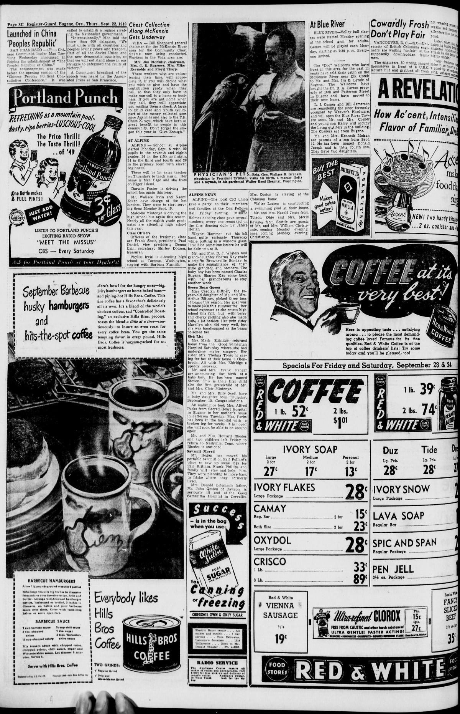
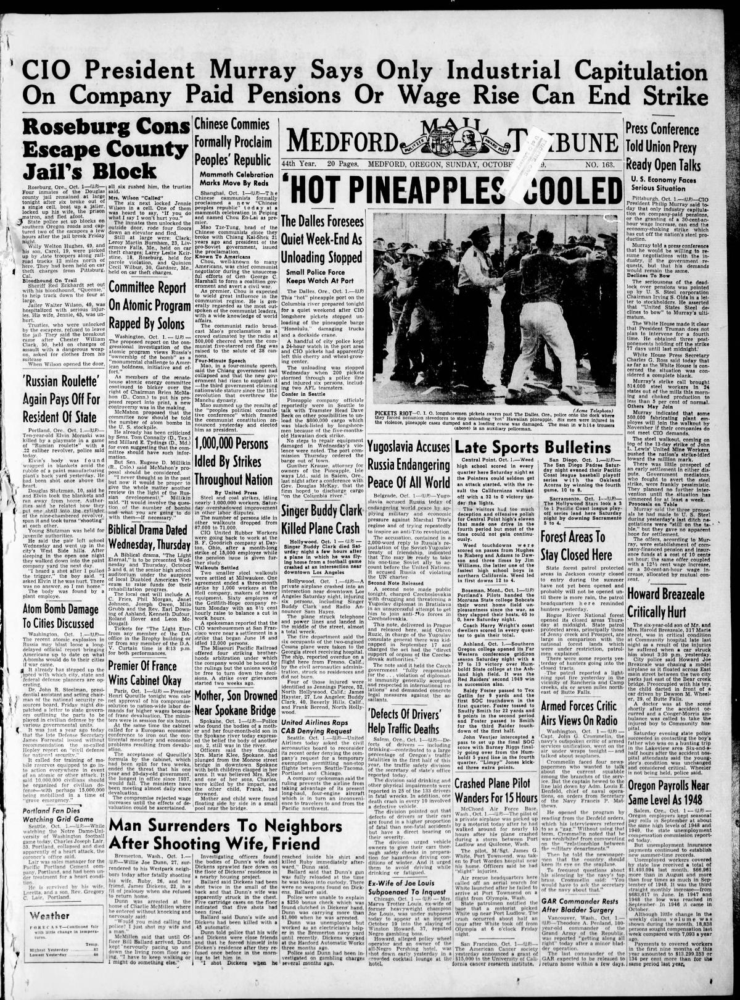

HN HN-576 · October 1, 1949 · Politics, Government & Diplomacy > Presidents, Monarchs & Leadership Changes > Transfers of power
Source: Indianapolis Times, p. 2 — original page; U.S. State Department, Chinese Revolution of 1949.
Report: “'People's Republic' Proclaimed in China as Thousands Cheer†described Mao Zedong's declaration in Beijing, a new central government, and a mass rally.
Assessment: The PRC was proclaimed October 1. This did not make the civil war's military and political consequences instantly disappear: the Republic of China government continued on Taiwan. A declaration and complete consolidation of rule are different historical events.
Authentic images retrieved from Historic Oregon Newspapers (University of Oregon). Article crops are located using the archive's own OCR word coordinates and rendered at native crop resolution; article clips are assembled from the archive's own article-block images; page scans are reduced-size access renditions. No images were generated, mocked, or retouched.


Not yet acquired. Queued for provider-specific acquisition testing (see source-acquisition manifest).
URL (preserved verbatim): https://newspapers.library.in.gov/?a=d&d=IPT19491001.1.2
Saved research report: Historical_Newspaper_Event_Research_553-577_2026-10-23.md
Evidence note: A newspaper report means a historical publication made a claim; it does not establish that claim as fact. Contemporary reporting is separated from later scholarly context and our own assessment.